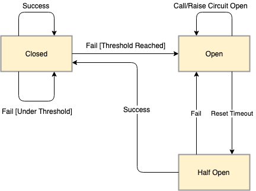
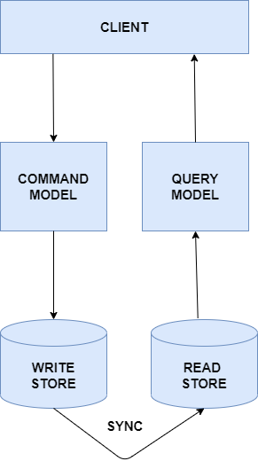
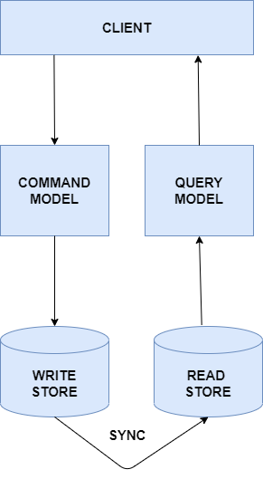

Birds Eye Overview of Session Plan
- What's System Design?
- Aspects of Design thinking
- CQRS Design Pattern
- Real Time CQRS Design Pattern Scenario
- Way Ahead
- Watercooler convos
What's System Design?
System:
Assembly of various different components to solve a business
problem.

Design:
Optimistic / Efficient way of connecting the components to achieve
desired performance and outcome.
Aspects of Design Thinking

Availability
Availability is the percentage of time system is up in a defined timeframe.
Ideally zero / minimal downtime is strived to be achieved.
Key Component of Availability:Load Balancer

Scalability
Scalability is how the system resources can cope up with unpredictable customer demands.
Strategies of Scaling:
- Horizontal Scaling
- Vertical Scaling
Resiliency
Resiliency is the ability of a system to gracefully handle the failures and recover from failures as soon as it can.
Design pattern to know: Circuit Breaker Design Pattern
Three states of Circuit Breaker Pattern
- Open State
- Closed State
- Half Open State

Data Management
Data management plays a crucial role in scalability, availability, security and resiliency
Functional aspects to consider:
- write heavy (more user transactions)
- read-heavy (reports)
- time series (log processing)
- Datawarehouse (data analytics)
Non-Functional aspects to consider:
- Data availability
- Data consistency
Performance
Scalability and performance are interrelated. If there are more users compared to what the system can handle, it is natural that the system would encounter performance issues.
Note:Scalability can’t solve all the performance issues but can solve some issues
Security
Building secure systems gives an assurance to users that their data is in safe hands
Three Aspects of Security
- Data Confidentiality: Is the read access to resources correctly implemented so that they can only be read by the authorized users?
- Data Integrity: Data integrity is the overall accuracy, completeness, and consistency of data.
- Data Durability: Refers to long-term data protection
CQRS Design Pattern
Command Query Resource Segregation (CQRS) Design Pattern as the
name implies is nothing but separating out your read and write models.
Traditional Approach of Handling read & write
 

CQRS DESIGN MODEL
Real Time CQRS Design Pattern Scenario
Existing Design of User Model
New Features to add
- Group user address based on region
- Show permanent address of user
- Show changes made by user in his permananet address in last two months
Real Time CQRS Design Pattern Scenario (1.1)
CQRS Implementation
Features Handled
- Group user address based on region
- Show permanent address of user
Advantages
- Optimize read performance
- You can scale your read store independently
Problem Statement Left
- Show changes made by user in his permananet address in last two months
Real Time CQRS Design Pattern Scenario (1.2)
CQRS Event SourcingImplementation
Event Sourcing
- Event Sourcing gives us a new way of persisting application state as an ordered sequence of events. We can selectively query these events and reconstruct the state of the application at any point in time
Advantages
- Optimize read performance
- You can scale your read store independently
- You can do time travel of the entity state.
Way Ahead
WaterCooler Convos
 Let's Wrap up with your thoughts & queries!!!
Let's Wrap up with your thoughts & queries!!!
Note:
You can find this session link
here.
Any queries ping / email to
Akilandeswari.DA@enquero.com